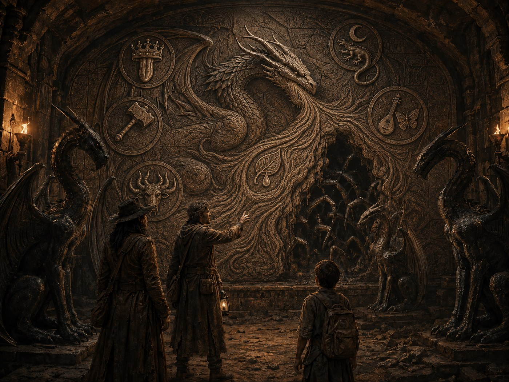

What Mortal Kind Remembers
Lore & Journals
The world before, the rules that keep it broken now, and the notes of a man who calls himself the Professor.
Lore
Funeral Rites
Bodies are wrapped in cloth and set on the water, where they float to the waterfall and fall into the Drop. It's been the ritual of Abrams Rest for decades.
The Great Devastation
A thousand years ago, a great calamity befell the world. What exactly happened, mortal kind no longer remembers — but the effects remain to this day.
Magic
Anyone in the Blighted West who displays magical tendencies risks being captured and put to work producing crops, water, food, and other services. It's normal to hide magical ability entirely to avoid that fate.
The Old World
The name given to the world before the Great Devastation.
Slave Collars
Runic collars suppress a magic user's abilities entirely, except for whichever single spell happens to align with the runes worked into the collar.
Slavery
Slavery exists throughout the Blighted West, particularly the enslavement of people with magical abilities, captured and used to magically produce crops, water, and food.
Water
Most naturally occurring water is acidic and toxic to nearly all life — even the oceans surrounding the Blighted West.
THE PANTHEON
Deities
Described in a mural found in an underground chamber, from one of the tales. Jarák was already known to the party through Hylanku's own faith.
Algrida
Goddess of Love and War. Her symbol is a warhammer.
Elryn
The Father of Dragons, and one of the first gods to leave Chaos. Gave Gozreh the elements to create the universe, and is also called the Master of All Elements — usually depicted with ice or water, said to be his preference. A mural found beneath the Blighted West shows him using his breath and the other gods' power to seal something called "the Worldbreaker" behind a barrier, after his own cage was broken.
View the mural

Gozreh
Received the elements from Elryn to create the universe. Her symbol — a leaf with a drop of water — sits at the very centre of the sealing mural, within Elryn's own breath.
Jarák
God of Earth and Mountain, depicted as a bull with six horns. The god Hylanku and Old Bull follow.
Manarach
God of the Shadows. Symbol: a lizard beneath a crescent moon.
Nymia
Goddess of Song and Dreams. Symbol: a lute and a butterfly.
Orf
God of Tricks and Charm. Symbol: a silver tongue before a crown.
Pharasma
The Lady of Graves. Symbol: a spiralling comet.
RECOVERED SESSION 10
Professor Godt's Journals
Recovered from the library in Session 10. The combination for the pedestal lock beneath these files was built from three subject numbers: 126, 442, 469.
Subject 001
Subject File — 001
Day 1 — The IdeaTwo centuries of boredom have finally worn through. I've decided to take up the sciences properly — with my magick behind it, I expect to go far. I'd like to start with a servant.
Day 9 — Subject 001A candidate presents herself: a young woman I've been courting, unaware of my nature. I intend to combine a chemist's approach to physiological change with my own arcane knowledge, and see whether I can build a being of subservience.
Day 27 — Halfway throughProgress, of a sort. The change causes her considerable pain — she begs me to end it. Her skin has begun to peel; I hope that's simply the old body making way for the new.
Day 46 — Transformation completeShe survived. Not what I'd hoped for — no able-bodied servant, only something that wails through most of the day — but for a first attempt, it's not without merit. Whatever I do to it, it heals near-instantly. This will be entertaining.
Subject 126
Subject File — 126
Day 1A new specimen, following the loss of the last: a young male ape taken from the banks of the Nanji River, cousin to the Vanarans. Watched him fell a stray zinza with a thrown rock — good aim, real intention behind it. Put him to sleep while he ate his prize.
Day 18 — three doses weeklyHis metamorphosis has begun. A puzzle that should take an ape three hours, he solved in thirty seconds. Verbal comprehension is coming along too, though he hasn't spoken yet. Increasing the dosage from here.
Day 57 — two doses dailyMotor skills much improved — he can hold and use a knife with real purpose. His spine is reshaping toward bipedal posture. Coupled with his natural physicality, he'll make a ferocious warrior. The changes seem to happen while he sleeps; I've started casting silence over his cage at night to study it further. He's stopped looking at me with rage. I've noticed him counting exits.
Day 237 — Termination of experimentThe mages have found what they were looking for, and this world is about to end. I've placed the subject in cryogenic stasis and hope he remains until I return. I warned that fool Abram. Now I have to clean up his mess. Before I go, I should give him a name.
Subject 227
Subject File — 227
Day 1Another attempt with the virus, still short a subject to take it as well as 126. A gnome female, young in her adult life — hoping her vigour and intellect help this along. Subjects have been hard to come by since what people are now calling "the Great Devastation," but beggars can't be choosers.
Day 25 — two doses dailySpeeding things up, brute force where finesse hasn't worked. No sign of improvement, only wailing.
Day 44 — To the pileComplete failure. The gnome grew in size — a sign, I'd thought — but it didn't hold. Adding her to the pile. The undead husks will be useful eventually.
Subject 442 — Jareth
Subject File — 442
Day 1 — The morning after the arrestsThe Baron put down the coup before it truly began — mortals playing out the same performance, a thousand years on. Something more interesting happened last night, though: a surge of magick from Resident Square, crone magic specifically. Haven't felt that in a long while. I've told Lorcend to bring me anything found — people, corpses, either.
Day 2 — Subject 442A delight. A young man, stabbed through the neck, and he still breathes. Stabilised for now — the magick keeping him alive is hag work, unmistakably. Poor boy, whatever he did to earn one of those creatures' contempt. It's been a long time since I've met power close to my own. I wonder if I could make contact.
Day 21 — Contact madeA green hag, going by Callow May. The boy was her son's lover, and she couldn't allow that — so she cursed him never to die, and never to heal. I may do as I please with him; she won't lift the curse, and I wouldn't want her to. She's asked to be told if anyone comes looking for him. I gave my word.
Day 63 — Piece by pieceI can remove enormous sections of him now and replace them with parts from far larger, stronger creatures — I've finally used the dragon hide I'd been saving. He may be the ultimate weapon before I'm through. Perhaps even the vessel I've been looking for.
Subject 469 — Old Bull
Subject File — 469
Day 1Lorcend brought me a cadaver "to play with," his words — an elderly minotaur male. Minotaurs are vanishingly rare now; I've little use for an aged corpse. Though I recall reading their bones hold the strength of iron even into old age. Might have some use after all.
Day 23 — Beginning the ritualDecided to use him as a guardian for my home. Ingredients needed: corpse-flower root, a live small animal, a flawless obsidian gemstone to bind the magicks. The gem will be hardest to find — I recall a mine somewhere in the Blight that might still stand.
Day 39 — Ingredients foundAsked Lorcend to bring the minotaur's belongings along with everything else. Nothing of note, save an amulet — the Horns of Bos, the Minotaur Emperor's royal guard — and a war axe. Odd that he carried it; the Minotaur Empire was lost to the Night Plains long ago. No matter — with this axe, he'll make a fine guard.
Day 42 — A new guardHad to discard most of the flesh and work from the skeleton alone, but the strength held. He obeys without question — nothing of his soul remains. Took some muscle and a horn for my prized subject. He'll look incredible.
Subject 693 — Thallion
Subject File — 693
Day 1 — An offerThe brute who runs the Colosseum claims to have an animal unlike anything he's seen — some kind of deer or caribou. Should be impossible; nothing like that survives anymore. Asked him to deliver it as soon as he can.
Day 4The animal is no longer in his possession. Most displeased.